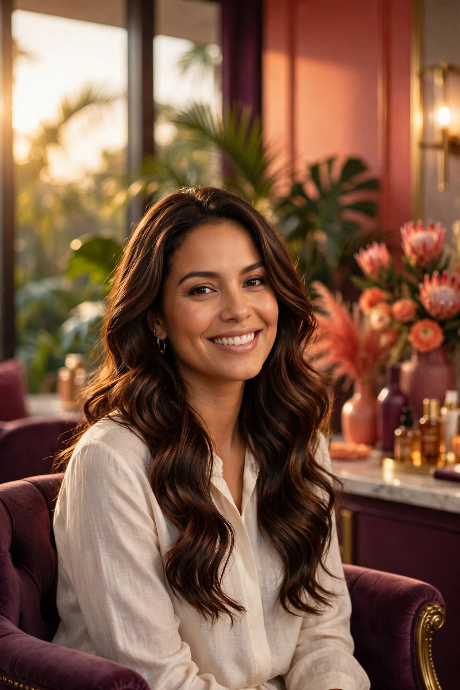
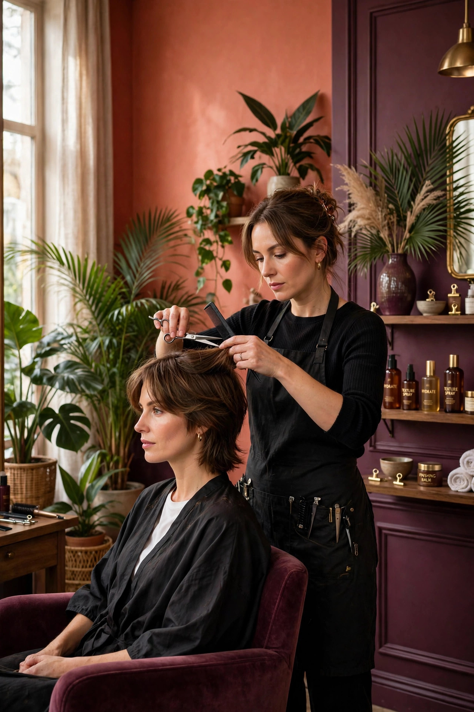
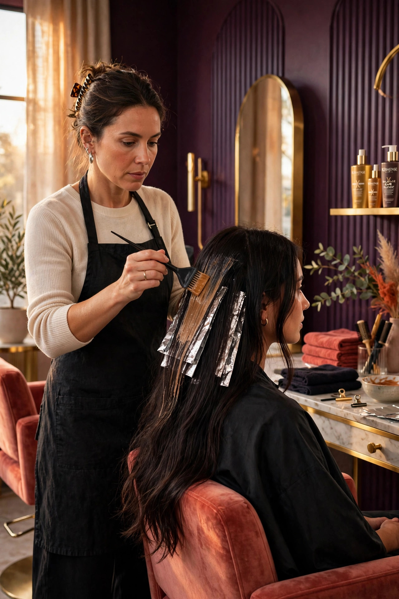
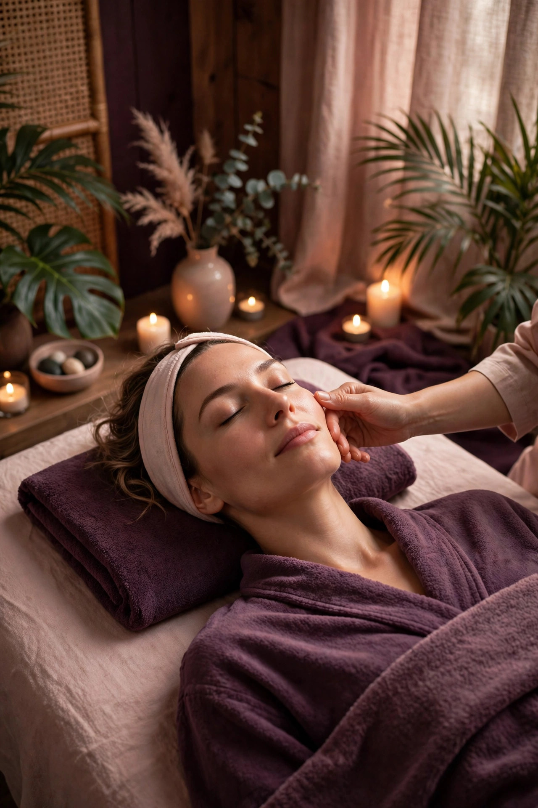
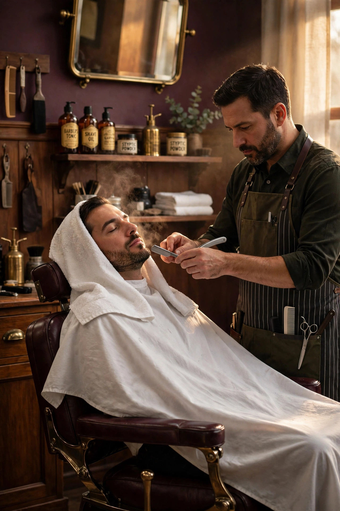

Estilismo & color
Peluquería
Cortes de autor, color francés, balayage luminoso y rituales de hidratación profunda capilar.
Ver servicios →4.2 ★ · 583 reseñas verificadas · Cali
El Arte Francés es el punto de encuentro con tu belleza interior para hacerla notar y revivir en el exterior. Savoir-faire parisino fusionado con el espíritu vibrante de Santiago de Cali.

Imagen de demostración — generada por IA Rituales de autorFilosofía & tradición
“Creamos momentos de relajación, paz, belleza y bienestar únicos.”
Entendemos el cuidado como un ritual compartido. En Arte Francés reunimos a toda la familia en un entorno cálido, seguro y sofisticado: desde el primer corte de un niño hasta el color vanguardista de la dama y el afeitado clásico para caballeros.
 Imagen de demostración — generada por IA
Imagen de demostración — generada por IACompromiso
Personal capacitado continuamente en tendencias globales, con el trato acogedor que caracteriza a Cali.
Espacio seguro
Música curada, aromaterapia sutil y un ambiente pensado para convertir tu cita en un escape renovado.
Catálogo esencial
Diseñadas con precisión y atención personalizada para responder a cada necesidad capilar, facial y estética.
Estilismo & color
Cortes de autor, color francés, balayage luminoso y rituales de hidratación profunda capilar.
Ver servicios →Grooming masculino
Afeitado tradicional con toalla caliente, corte clásico o contemporáneo y perfilado de barba.
Ver servicios →Rostro & cuerpo
Faciales revitalizantes, limpieza profunda, masajes antiestrés y tratamientos dermocosméticos.
Ver servicios →Nails & spa
Spa de uñas completo, esmaltado semipermanente de alta durabilidad, diseño y exfoliaciones botánicas.
Ver servicios →Espacio lúdico
Atención cariñosa y divertida en estaciones adaptadas para que los niños disfruten su propio corte.
Ver servicios →Experiencias exclusivas
Protocolos diseñados por nuestros estilistas. Cada ritual se adapta a la textura, la salud y el tono de tu cabello. Precios y duraciones exactas a confirmar con el salón.

Imagen de demostración — generada por IACorte & forma
Visagismo profesional, lavado con masaje capilar calmante y diseño adaptado a las facciones de tu rostro.
Reservar este ritual
Imagen de demostración — generada por IAColor couture
Técnica de matización e iluminación progresiva que emula la luz natural del Valle. Sin demarcaciones abruptas y con brillo sedoso.
Reservar este ritual
Imagen de demostración — generada por IANutrición profunda
Baño sellador de cutícula con aceites botánicos. Elimina el frizz y revive la elasticidad natural del cabello.
Reservar este ritualVoces de Cali
4.2 sobre 5 · Más de 500 reseñas · Textos publicados en artefrances.com
Testimonios publicados por el salón en su sitio web — se muestran con sus palabras exactas.
Sede principal
Nuestra sede principal en Cali, con salas de spa, zona infantil y atención para toda la familia.
Ver todas las sedes →
Imagen de demostración — generada por IATu momento de calma empieza aquí
Elige tu sede, tu ritual y la hora que mejor se ajuste a tu rutina. Sin filas ni esperas.
Agendar cita ahora Llamar al (2) 668 4445